To perform the live experiment on the lab, the student needs to login, or create a login id (if new).
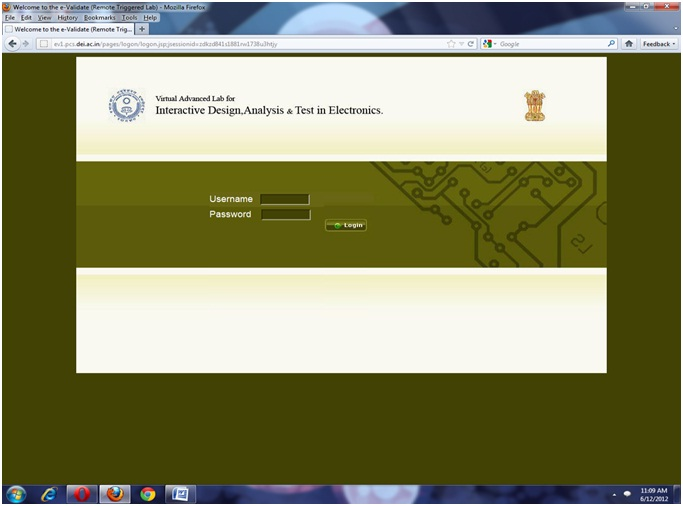
After logging on, the student should select any one option from list of labs
a) Slot System
b) One Shot system
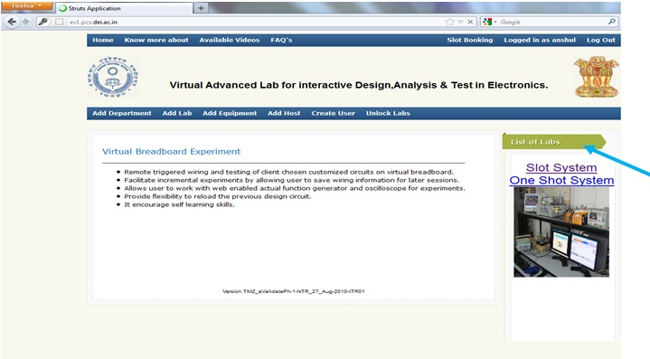
If you are selecting SLOT SYSTEM, in that case you have to book your time before performing the experiment; otherwise you can perform experiment directly on ONE SHOT SYSTEM.
To perform the experiment on Slot System, student has to book their slot time. Student should click on Slot Booking
.
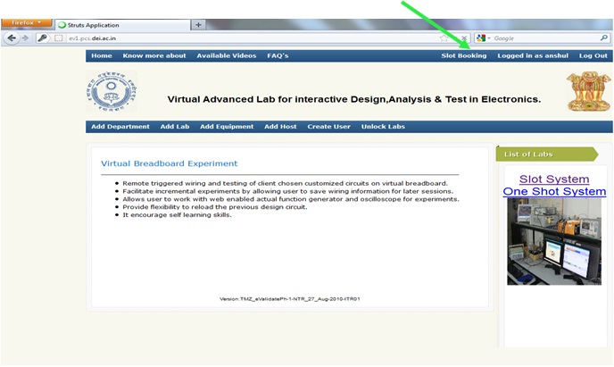
As student will click on Slot Booking, a new window will appear which has all slot timing. Student can select only one slot in a single day.
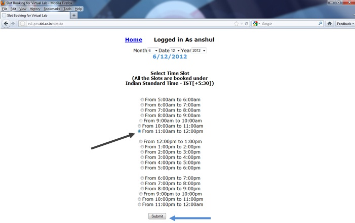
After selection of slot, you should click on Submit button.
As you will click on Submit button, an acknowledgment pop up window will open to give the information that slot has been selected, click on OK button.
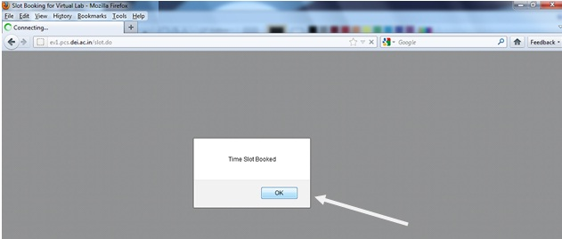
Now student has to click on Home button.
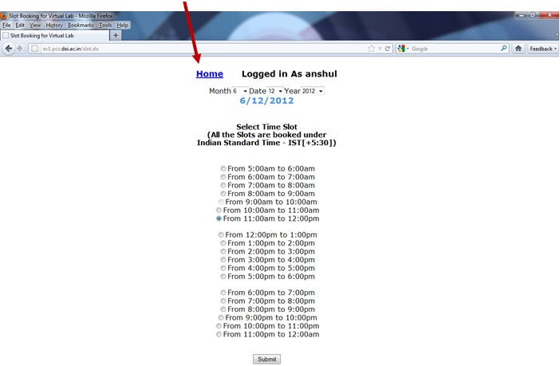
Now click on Slot System.
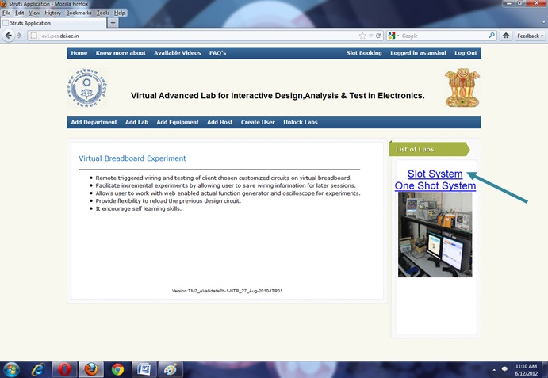
After clicking on Slot system, you are ready to perform the experiment.
Now select the experiment Summing Amplifier from the experiment list.
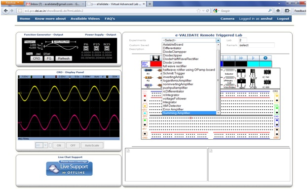
After selecting the experiment you will see the schematic and breadboard circuit diagram. The bread board circuit diagram is an example how to connect components on board. Student can connect the components by drag and drop process.
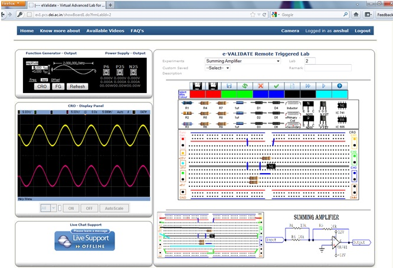
When the process of connecting the components completed, then student should check that all the components are in proper manner, if the components are not in proper manner than delete the component and rewire it.
After implementation of components on bread board, student must have connected function generator for providing input signal, Power supply for providing power to ICs, these are on left side of bread board. And then should connect the CRO for see the output, the 3 different channels of CRO are available which are on right side of bread board.
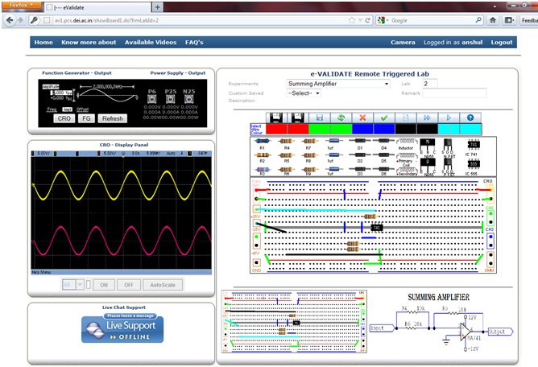
When all the components are connected properly, student should click on FG (Function Generator), After clicking on FG , a new window of function Generator will be appear, The all value like as amplitude, frequency, wave (sine, square, ramp, etc.) and DC offset should be proper and with its unit, after that click on Update Display.
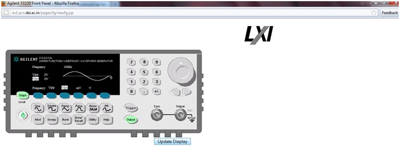
Now click on Run button to see the output.
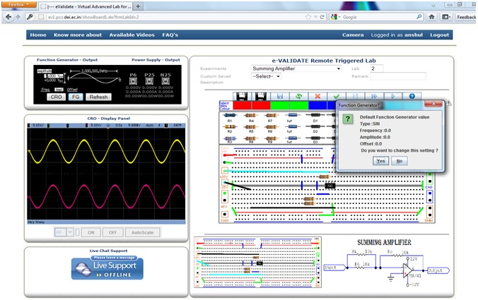
As you click on run button, a new pop up will open, where if you want to change the value of input which you have earlier provided than click on YES, otherwise click on NO.
After clicking on NO, you will get the output of circuit in new window which is of CRO.